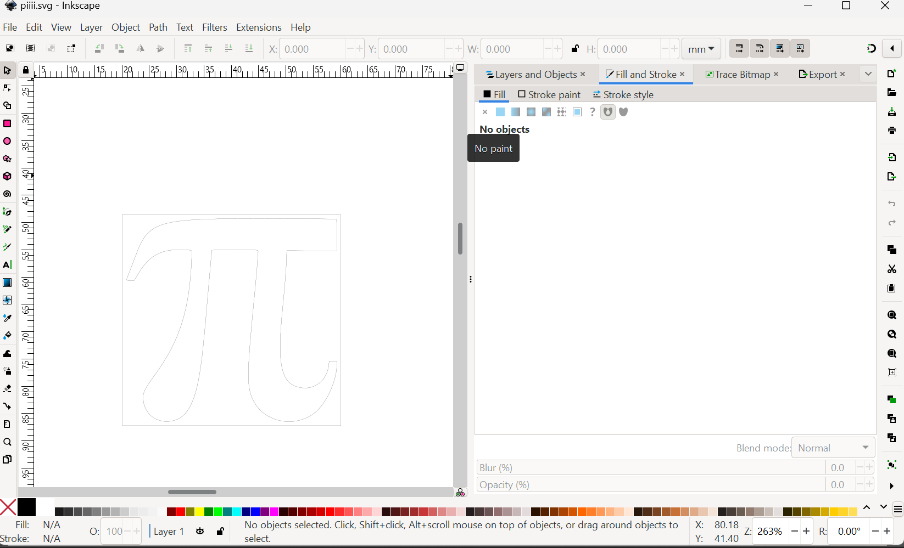
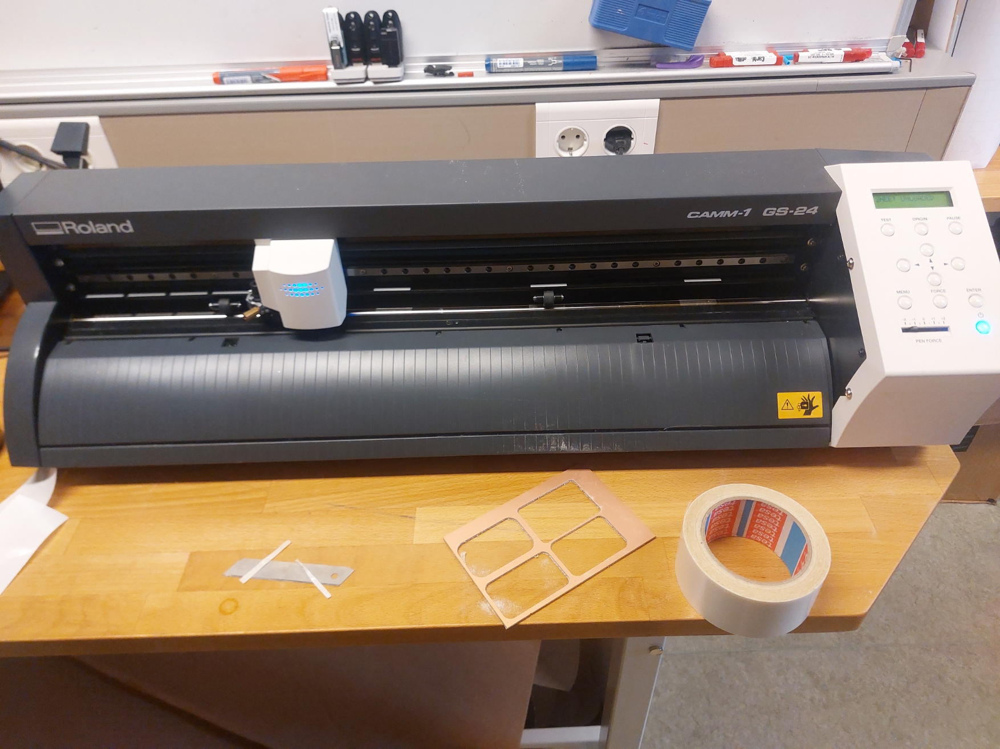
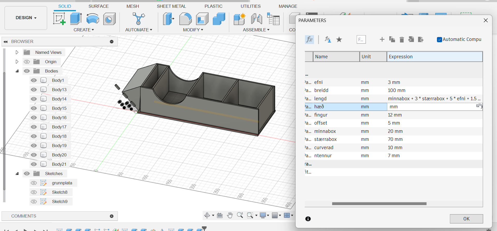
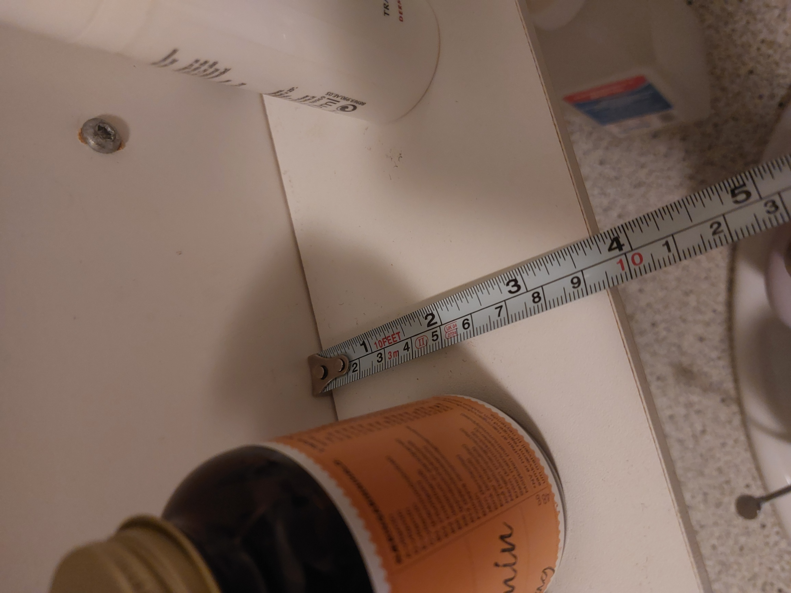
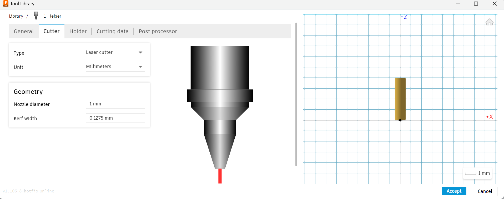
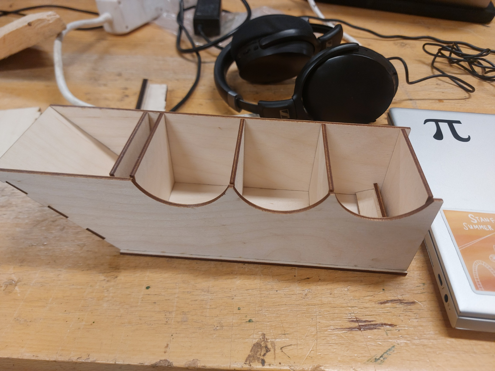

Vínylskurður
Fyrsta skrefið í verkefninu var að kynna mér lýsingu á verkefninu og leiðbeiningarefni frá kennara.
Þegar ég hafði kynnt mér út á hvaða verkefnið gengi og hvernig ég ætti að framkvæma það hófst ég handa við hugmyndaleit. Mér datt fyrst í hug að skera út geimflaugina úr Tinnabókunum en eftir að undirbúa hana til skurðar í Inkscape áttaði ég mig á því að hún myndi enda í mjög mörgum aðskildum límmiðum sem væri vesen að raða upp. Ég ákvað því að velja aðeins einfaldara form og endaði á því að velja einfaldlega gríska stafinn pí. Ég fann sniðuga mynd á netinu og hlóð henni niður. Næst setti ég hana inn í Inkscape. Þar valdi ég trace bitmap til að fá myndina á "vector graphic" formi. Að því loknu gat ég stillt myndina rétt til skurðar. Ég fór í
Fill and Stroke>Fill>No Paint.
Svo
Stroke Paint>Flat Color.
Loks valdi ég
Stroke Style>Width=0.02
.

Þessu exportaði ég svo sem PDF skjali og fór með í vínylskerann.

Skurðurinn gekk afbragðsvel og ég skellti límmiðanum beint á fartölvuna mína. Niðurstöðuna má sjá hér efst á þessari síðu.
Geislaskurður
Áður en ég hélt lengra framkvæmdi ég kerf mælingar með vini mínum Guðna. Við ætluðum báðir að nota 3mm krossvið í verkefninu okkar svo við framkvæmdum mælingarnar á þesskonar plötu. Við skárum út 11 kubba hlið við hlið, mældum lengd kubbanna og lengd holunnar sem myndaðist. Bilið mældum við 110.25mm og kubbana 108.72. Mismunurinn var því 1.53mm. Þessum mismun deildum við með 12 til að meta þykkt geislans. Niðurstaðan var sú að kerfið væri 0.1275mm.
Þegar þessu var lokið hélt ég áfram teikningu í Fusion. Ég vissi strax að ég vildi 3 "stór" box og eitt lítið. Ég skilgreindi því stika fyrir stærð þessarra boxa og teiknaði botnplötu kassans. Platan var teiknuð með pressfit götum með reglulegu millibili til að tengja við hana veggi og skiptiplötur. Lengd gatanna var táknuð með "fingur" og fjarlægt þeirra frá jaðri með "offset". Þegar botnplatan var klár framkvæmdi ég smá stikatest til að gá hvort allt virkaði sem skyldi. Í ljós kom að ein lengdarbreytan var vitlaust skilgreind og götin stóðu útúr botnplötunni, en ég lagaði það í hvelli og allt gekk upp.
Ég ákvað líka að bæta við skáhólfi fyrir tannþráð sem bendir beint á tannburstaglasið okkar. Mér fannst það vera frekar feng shui. Fjöldi tanna á tengifleti skáplötunnar var táknuð með stikanum "ntennur". Ég bætti einnig við útskornum hringbogum bæði uppá útlit og til að einfalda notkun kassans. Fyrir stærð bogans notaði ég stikann "curverad" til að einfalda breytinguna. Þegar ég hafði teiknað hliðar og skiptihólf kassans prófði ég aftur hvort allir stikar virkuðu sem skildi. Í ljós kom að hæðarstikinn virkaði ekki nógu vel. Þegar ég breytti honum fór öll skáplatan í rugl eins og sjá má að neðan.

Í ljós kom að lengd skáplötunnar var skilgreind með fastri lengd, en ég breytti henni svo að hún hallaði um 45° og skærist við efri brún hliðarplatnanna. Þá gekk allt upp Þegar ég prófaði parametrana aftur gekk allt fullkomlega. Að neðan má sjá smá fikt með parametra.
Þegar formið var komið framkvæmdi ég mælingar á skápnum heima hjá mér til að ákvarða gildi stikanna.

Síðan stillti ég stikana í módelinu svo þeir pössuðu við mælingar mínar. Þá var ég orðinn tilbúinn að prófa að skera út. Fyrst framkvæmdi ég snögga prófun til að kanna hvort pressfittið virkaði. Til þess teiknaði ég einfalda samsetningu, og lagði bitana niðut samsíða flata með því að nota align í Fusion. Til að reikna með kerfinu fór ég í
Manufacture>Utilities>Tool Library
Þar bjó ég til nýtt tool sem ég kallaði "leiser". Ég stillti það þannig að það væri með rétt kerf.

Næst valdi ég Fabrication og bjó til nýtt setup með leiser-tólinu völdu og bitana tvo. Næst valdi ég Cutting og passaði að rétt tól og bitar væru valdir. Auk þess passaði ég að "Sideways compensation" væri "left" og "compensation type" væri "in computer". Að lokum valdi ég Post Process, hakaði við "Only cutting" og tók hakið af "include drill". Síðan valdi að exporta sem DXF skrá og gaf skránni heiti.
Þessari DXF skrá hlóð ég inn í Inkscape og framkvæmdi sömu skref og í vínylskurðinum til að undirbúa hana fyrir skurð. Loks fór ég með skrána í geislaskerann og skar út úr 3mm krossvið.
Bitarnir smellpössuðu saman svo næsta skref var einfaldlega að prenta út kassann. Ég fylgdi sömu skrefum og áður í Fusion og Inkscape og skar út kassann minn í geislaskeranum.
Það gekk glæsilega fyrir utan einn bita sem hafði gleymst að bæta við tönnum á. Ég prentaði hann því aftur út og setti kassann svo saman. Loks kom ég honum fyrir í skápnum heima og raðaði vítamínunum og tannþræðinum í hann. Lokuppsetninguna er að finna efst á síðunni. 